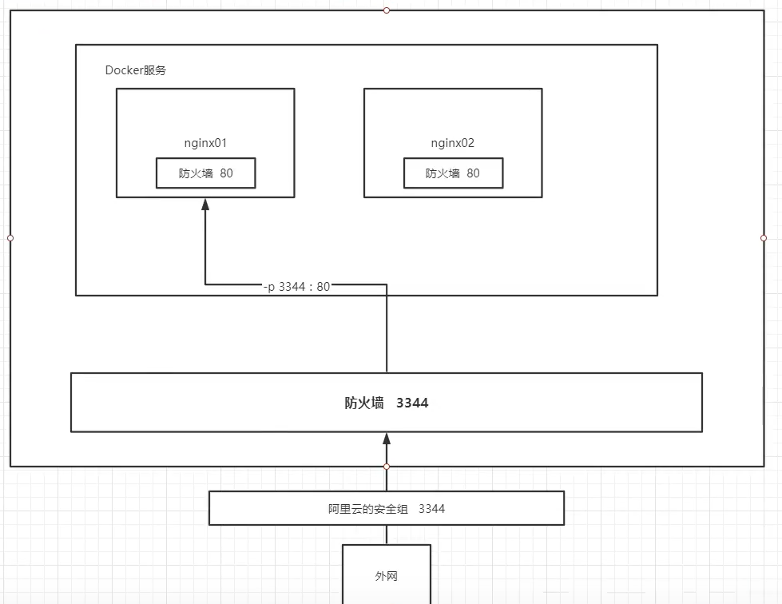

作业一：暴露端口的重要性
作业二：官方测试以及如何进入容器查看的重要性
作业三：查看容器的存活状态
作业一：部署Nginx
步骤：
1、搜索镜像；search 建议去docker搜索，可以看到帮助文档
2、下载镜像；pull
3、运行测试；docker run -d --name nginx01 -p 3344:80 nginx
-d 代表后台运行；
--name 给容器命名；
-p 宿主机端口：容器内部端口
[root@192 likang]# docker run -d --name nginx01 -p 3344:80 nginx
87c4962aa2748873f64e4683e086b8620a7be34aec31d7224ddd36bb47c028a1
[root@192 likang]# docker ps
CONTAINER ID IMAGE COMMAND CREATED STATUS PORTS NAMES
87c4962aa274 nginx "/docker-entrypoint.…" 14 seconds ago Up 8 seconds 0.0.0.0:3344->80/tcp, :::3344->80/tcp nginx01
[root@192 likang]# docker ps
CONTAINER ID IMAGE COMMAND CREATED STATUS PORTS NAMES
87c4962aa274 nginx "/docker-entrypoint.…" 51 seconds ago Up 44 seconds 0.0.0.0:3344->80/tcp, :::3344->80/tcp nginx01
[root@192 likang]# curl localhost:3344
<!DOCTYPE html>
<html>
<head>
<title>Welcome to nginx!</title>
<style>
body {
width: 35em;
margin: 0 auto;
font-family: Tahoma, Verdana, Arial, sans-serif;
}
</style>
</head>
<body>
<h1>Welcome to nginx!</h1>
<p>If you see this page, the nginx web server is successfully installed and
working. Further configuration is required.</p>
<p>For online documentation and support please refer to
<a href="http://nginx.org/">nginx.org</a>.<br/>
Commercial support is available at
<a href="http://nginx.com/">nginx.com</a>.</p>
<p><em>Thank you for using nginx.</em></p>
</body>
</html>
[root@192 likang]#
4、进入容器
docker exec -it nginx01 /bin/bash
[root@192 likang]# docker exec -it nginx01 /bin/bash
root@87c4962aa274:/# whereis nginx
nginx: /usr/sbin/nginx /usr/lib/nginx /etc/nginx /usr/share/nginx
root@87c4962aa274:/# ls
bin dev docker-entrypoint.sh home lib64 mnt proc run srv tmp var
boot docker-entrypoint.d etc lib media opt root sbin sys usr
root@87c4962aa274:/# cd etc/nginx
root@87c4962aa274:/etc/nginx# ls
conf.d fastcgi_params mime.types modules nginx.conf scgi_params uwsgi_params
root@87c4962aa274:/etc/nginx#
端口暴露：

思考问题：每次改动nginx配置文件，都需要进入容器内部？十分麻烦，要是可以在容器外边提供一个映射路径，达到在外部修改文件名，容器内部就可以自动修改？
作业二：部署Tomcat
官方的方法：
docker run -it --rm tomcat:9.0
#我们之前的启动都是后台启动，停止了容器，容器还可以查到， docker run -it --rm，一般用来测试，用完就删（删除容器）。
#推荐先下载在启动
#下载
docker pull tomcat
#启动
docker run -d -p3355:8080 --name tomcat01 tomcat
#测试访问
404
#访问测试没有问题
#进入容器
docker exec -it tomcat01 /bin/bash
#发现问题：1、Linux命令少了，2、没有webapps，阿里云镜像的原因。默认是最小的镜像，所有不必要都剔除了，保证最小的可运行环境。
#将webapps.dist下所有的东西拷贝到 webapps下
cp -r webapps.dist/ * webapps
思考问题：部署项目，如果每次都需要进入容器十分的麻烦？要是在容器外部提供一个映射路径，在外部放置项目，自动同步的容器内部就好了。
作业三：部署es+kibana
#es 暴露的端口很多
#es 十分耗内存
#es 的数据一般需要放置到安全目录！挂载
# --net somenetwork ? 网络配置
#启动
docker run -d --name elasticsearch -p 9200:9200 -p 9300:9300 -e "discovery.type=single-node" elasticsearch:7.6.1
#启动了发现非常卡（es非常耗费内存，windows单机需要1.5内存）
#docker stats 查看cpu的状态
#一般云服务器学生机是1核2G！
#测试es是否成功
curl localhost:9200
#关闭es，增加内存的限制
#修改配置文件 -e 环境配置修改
docker run -d --name elasticsearch -p 9200:9200 -p 9300:9300 -e "discovery.type=single-node" -e ES_JAVA_OPTS="-Xms64m -Xmx512m" elasticsearch:7.6.1
#-e ES_JAVA_OPTS="-Xms64m -Xmx512m" 设置JVM最大512m内存

设置为512m发现es启动不了了。
增加参数后：

使用kibana连接es